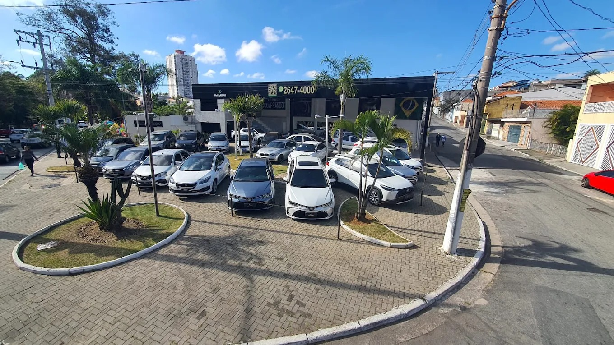

Multiplikar Automóveis
Comércio especializado de veículos novos, seminovos e usados no bairro Vila São Geraldo.
Multiplikar Automóveis | Vila São Geraldo
Comércio especializado de veículos novos, seminovos e usados no bairro Vila São Geraldo.
A Multiplikar Automóveis é uma empresa do segmento automotivo sediada no bairro Vila São Geraldo. Com aproximadamente dois anos de atuação consolidada no mercado regional e uma equipe composta por cerca de seis funcionários qualificados, a organização dedica-se a prestar serviços comerciais e operacionais com seriedade, dinamismo e transparência.
Nossas operações abrangem a comercialização de veículos novos, seminovos e usados, compra direta de veículos de pessoas físicas, intermediação de veículos em regime de consignação, realização de avaliações técnicas criteriosas, conferência e emissão de laudos cautelares, gestão e controle rigoroso de estoque, estruturação de vendas à vista e financiadas, processamento flexível de pagamentos, garantia pós-venda em veículos elegíveis, além de programas de indicações e comissões para parceiros comerciais.

Este ambiente digital tem como finalidade primordial fornecer a clientes, parceiros e fornecedores uma visão detalhada, transparente e acessível de todos os processos operacionais e comerciais da Multiplikar Automóveis. Por meio das páginas disponibilizadas, o usuário tem a possibilidade de:
Conheça um pouco mais sobre a nossa proposta de atendimento e a estrutura da loja no bairro Vila São Geraldo através dos nossos registros multimídia institucionais:
Ouça uma breve apresentação sonora sobre os valores, história e modo de atendimento da Multiplikar Automóveis:
Assista ao registro em vídeo da estrutura física da loja, pátio de atendimento e organização dos veículos no bairro Vila São Geraldo:
Abaixo apresentamos uma síntese de nossas principais frentes de trabalho. Acesse as páginas dedicadas para obter instruções completas sobre cada modalidade:
Disponibilizamos modelos de diversas montadoras, categorias, quilometragens e faixas de preço, com histórico conferido e preparação técnica prévia.
Compramos veículos diretamente de proprietários particulares, mediante análise presencial das condições estruturais, mecânicas e documentais.
Intermediação profissional para quem deseja vender seu veículo com segurança jurídica e ampla divulgação, mantendo a titularidade até a conclusão da venda.
Inspeção minuciosa de itens externos, internos, mecânica, suspensão, freios, originalidade de chassi e motor, e histórico de sinistros ou leilões.
Negociação transparente com possibilidade de entrada com veículo usado, aceitação de dinheiro, Pix, cartão de débito e crédito, e financiamento, inclusive combinando meios de pagamento.
Encaminhamento ágil de crédito automotivo junto aos principais bancos e financeiras atuantes no país, com suporte em toda a fase cadastral e aprovação.
Acompanhamento e suporte técnico mecânico para veículos contemplados com garantia contratual de dois meses, com registro de atendimentos e diagnósticos transparentes.
Valorizamos parcerias locais e clientes satisfeitos por meio de programas estruturados de recompensa e comissionamento por indicações de novos negócios fechados.
Precisa comprar, vender, trocar ou financiar um automóvel? Nossa equipe de atendimento está à disposição para auxiliar em cada etapa de sua negociação: